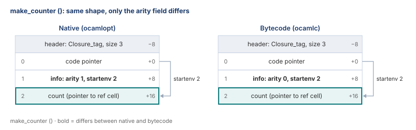
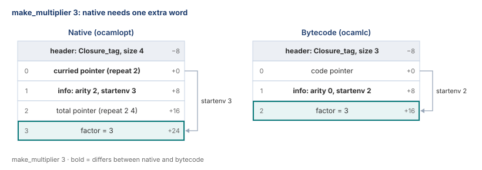
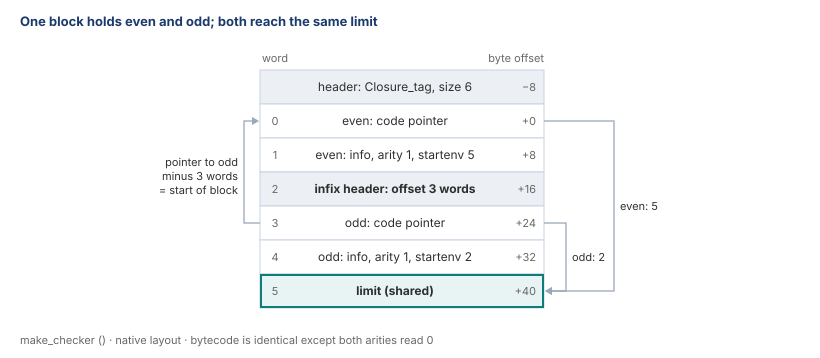
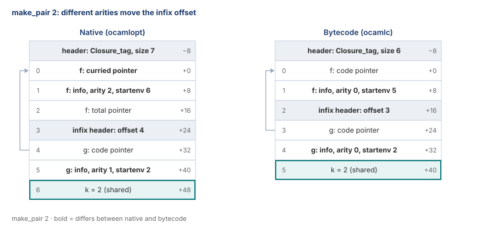

The big idea
A closure is a function plus the variables it remembers. OCaml stores it as one heap block. The GC must find every pointer in that block.
The BNF gives the layout, top to bottom:
closure ::= entrypoint (infix-header entrypoint)* value*
entrypoint ::= code-pointer closure-info // arity = 1
| code-pointer closure-info code-pointer // arity > 1
closure-info ::= arity [8 bits]
· start-of-environment [wordsize − 9 bits]
· 1So a closure block has three parts:
- Entrypoint. Code pointer(s) plus its own info word. 2 or 3 words, depending on the compiler (see below).
- Infix header + entrypoint, zero or more times. Only for mutually recursive functions.
- Environment (
value*). The captured variables. Heap pointers live only here.
Before all this sits the usual OCaml block header: size and tag (Closure_tag = 247).
On a 64-bit machine each word is 8 bytes. In the diagrams, the left number is the word index. The right number is the byte offset from word 0, where the closure pointer points. The header sits just before it, at −8.
The info word holds two numbers: the arity and startenv. Startenv says how far ahead the environment begins. Its last bit is 1, so the GC treats it as an integer, not a pointer.
The GC’s rule: jump to startenv, scan only from there.
Arity is the number of arguments a function takes. The BNF above is the native layout. Bytecode differs a little, as the next section shows.
Native vs bytecode
OCaml has two compilers. ocamlopt produces native machine code. ocamlc produces bytecode, which an interpreter runs. They lay out closures a little differently.
The reason is partial application, like repeat 2 in Example 2:
Native: the caller reads the arity. If the call has exactly that many arguments, it jumps to the total pointer. Otherwise it passes them one at a time through the curried pointer, a helper (caml_curryN) that builds partial closures. So arity 2 or more needs both pointers.
Bytecode: the function itself checks how many arguments arrived (the GRAB instruction), and builds a partial closure if needed. So one code pointer is enough, and the arity field is unused.
Native (ocamlopt) | Bytecode (ocamlc) | |
|---|---|---|
| Entrypoint, arity 1 | 2 words: code, info | 2 words: code, info |
| Entrypoint, arity ≥ 2 | 3 words: curried, info, total | 2 words: code, info |
| Arity field | the real arity | always 0 |
| Infix offsets | depend on the arities | always 3, 6, 9… words |
| Startenv and the GC rule | same | same |
Tupled functions like fun (x, y) -> … store a negative arity (−2) in native code, but still use 3 words.
Source: OCaml 4.14.1, asmcomp/cmmgen.ml and asmcomp/cmm_helpers.ml (native), runtime/interp.c (bytecode). Every layout below was checked by compiling the example with both compilers and reading the real block.
Example 1: one argument (arity 1)
let make_counter () =
let count = ref 0 in
fun () -> incr count; !countmake_counter () returns a counter. Each call returns 1, 2, 3… The counter takes one argument, (), so its arity is 1. It captures count, a pointer to a ref cell on the heap. The block is 3 words after the header.

Both compilers build the same shape. The only difference: bytecode writes arity 0.
The environment holds a real heap pointer here. So the GC must scan it and follow count to the ref cell.
Example 2: two arguments (arity 2)
let make_multiplier factor =
let rec repeat x n =
if n = 0 then 0 else factor * x + repeat x (n - 1)
in
repeatmake_multiplier 3 returns repeat, with factor = 3 captured. So repeat 2 4 = 24.

Arity 2 means repeat can be called in two ways:
- All at once:
repeat 2 4returns 24. - One at a time (curried):
repeat 2returns a new function that waits forn.
Native keeps a pointer for each way. The curried pointer goes to the helper that builds the partial closure. The total pointer goes straight to the body. So the entrypoint is 3 words, and startenv = 3.
Bytecode keeps one code pointer. The function handles partial calls itself. So the block is one word shorter, and startenv = 2.
Example 3: two functions in one block (infix)
let make_checker () =
let limit = Random.int 100 in
let rec even n = n = 0 || (n > 0 && n <= limit && odd (n - 1))
and odd n = n > 0 && n <= limit && even (n - 1)
in
eveneven and odd call each other. Both use the same limit. OCaml puts both in one block, with one copy of limit.

- Infix header (word 2). It sits before odd’s entrypoint. It stores the distance back to word 0: 3 words (24 bytes).
- A pointer to odd lands on word 3, mid-block. The GC subtracts 3 words, reaches word 0, and marks the whole block. It never marks the infix part alone.
- Two startenvs, one environment. Each is counted from its own entrypoint. Even: 5 − 0 = 5. Odd: 5 − 3 = 2. Both reach word 5.
Both functions have arity 1, so native and bytecode match here. Bytecode only writes arity 0 in both info words. The next example shows what changes when arities differ.
Example 4: mixed arities (native vs bytecode)
let make_pair k =
let rec f x y = if x = 0 then y + k else g (x - 1) + y
and g x = f x k
in
ff has arity 2 and g has arity 1. Both share k. Here make_pair 2 builds the block.

- Native: f’s entrypoint is 3 words. So the infix header lands at word 3, and g starts 4 words from the block start.
- Bytecode: every entrypoint is 2 words. So infix offsets are always 3, 6, 9… words.
The GC works the same either way. It reads whatever offset the infix header holds.
Cheat sheet
| Word | What the GC does |
|---|---|
| Header | Reads the size and tag. |
| Code pointer | Skips it. It points to code, not the heap. |
| Info word | Reads startenv. Last bit is 1, so never followed. |
| Infix header | Uses its offset to find the block start. Never marked alone. |
| Environment | Scans it. Only these words can hold heap pointers. |
In one line: the compiler and arity set the entrypoint size (2 or 3 words), startenv skips it, and the infix offset leads back to the parent block.